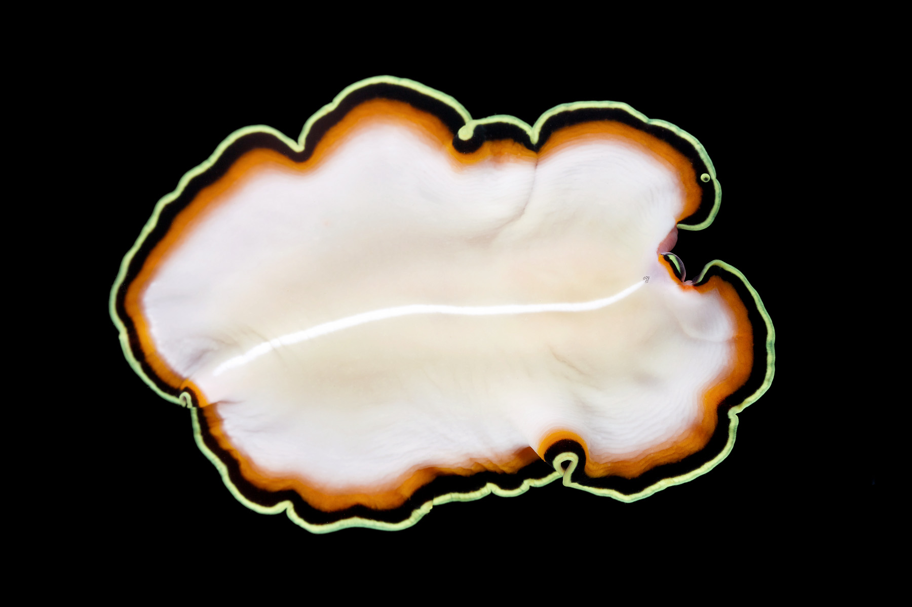
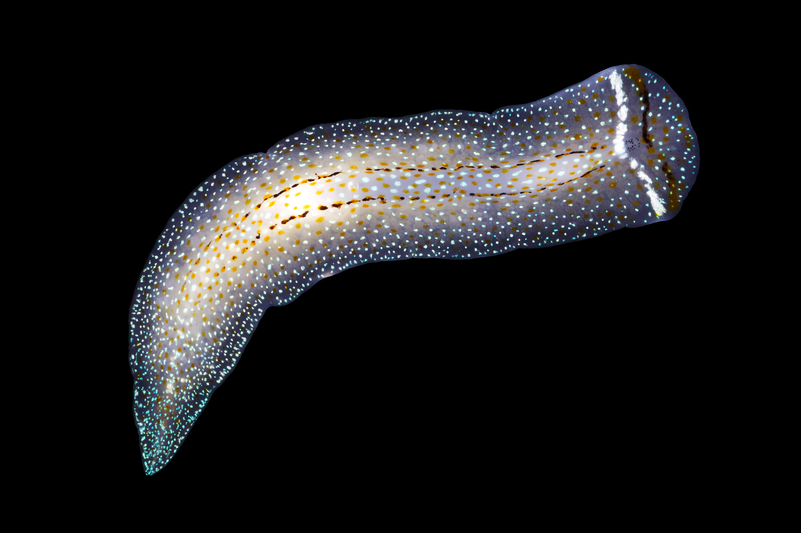
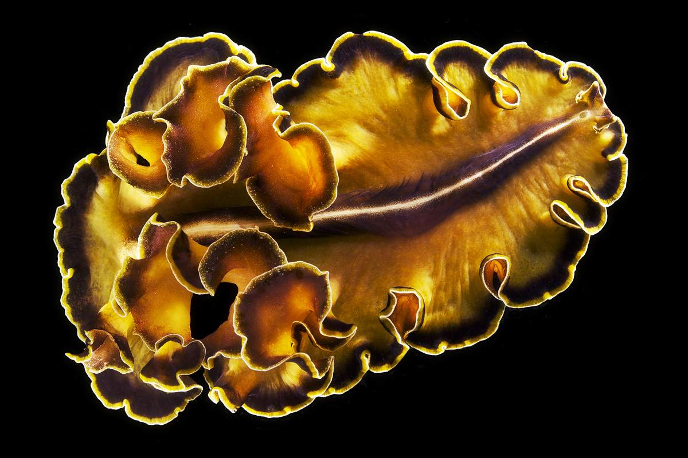

Taxonomy, Systematics and Evolution of Polyclad Flatworms
 Polycladida is one of the two macroscopic orders of free-living Platyhelminthes. They inhabit all oceans of the planet, from the intertidal to the deep sea (more than 2500 metres deep), but they are most diverse and conspicuous in tropical waters. They are known to be predators, some more specialized, but other some are voracious generalists, although their role in ecosystems is poorly studied. There are between 800 and 1100 described species, but still a lot of its diversity is unknown. Despite have being identified and studied for a long time now, it is a neglected group with very few expert taxonomists worldwide.
Polycladida is one of the two macroscopic orders of free-living Platyhelminthes. They inhabit all oceans of the planet, from the intertidal to the deep sea (more than 2500 metres deep), but they are most diverse and conspicuous in tropical waters. They are known to be predators, some more specialized, but other some are voracious generalists, although their role in ecosystems is poorly studied. There are between 800 and 1100 described species, but still a lot of its diversity is unknown. Despite have being identified and studied for a long time now, it is a neglected group with very few expert taxonomists worldwide.
A significant part of our research was focused on describing the biodiversity of Polycladida, mainly in the Iberian Peninsula, but also in other areas such as the Caribbean Sea or the Great Barrier Reef (Australia). This was mostly a taxonomic work that substantially increased the knowledge of the Order for Spanish waters. The prodecure included collection, histological preparation, morphological examination (primarly of the reproductive structures) and description. We described and named five new species (Notoplanella estelae and Lurymare clavocapitata amongst them) from the Mediterranean Sea and the Atlantic and Pacific Oceans, belonging to both suborders Cotylea and Acotylea. In addition, we analysed other aspects of the morphology, from a comparative perspective, to elucidate how evolution has shaped this organisms.
We also focused on the phylogeny of the whole group and of some specific taxa within, as well as on other evolutionary processes, using molecular biology techniques. We designed order- and species-specific PCR primers targeting different regions of the mitochondrial genomes, and reconstructed the phylogeny of Polycladida based on them, being one of the three studies aimed at the evolutionary history of the whole group. Finally, I completed my master's thesis on species delimitation in the genera Pseudoceros and Pseudobiceros, using morphological examination and DNA barcoding.



People involved in this project:
- Carolina Noreña, National Museum of Natural Sciences of Spain
- Maite Aguado, Autónoma University of Madrid
- Cristina Grande, Autónoma University of Madrid
- Jorge Rodríguez, Australian Museum
- Fernando Ángel Fernández-Álvarez, Institute of Marine Sciences of Barcelona
- Bruno Almon, Spanish Institute of Oceanography
- Jacinto Pérez, Grupo de Estudio do Medio Mariño
- Francisco Brusa, La Plata Museum
- Cristina Damborenea, La Plata Museum
- Patricia Pérez, Cádiz University